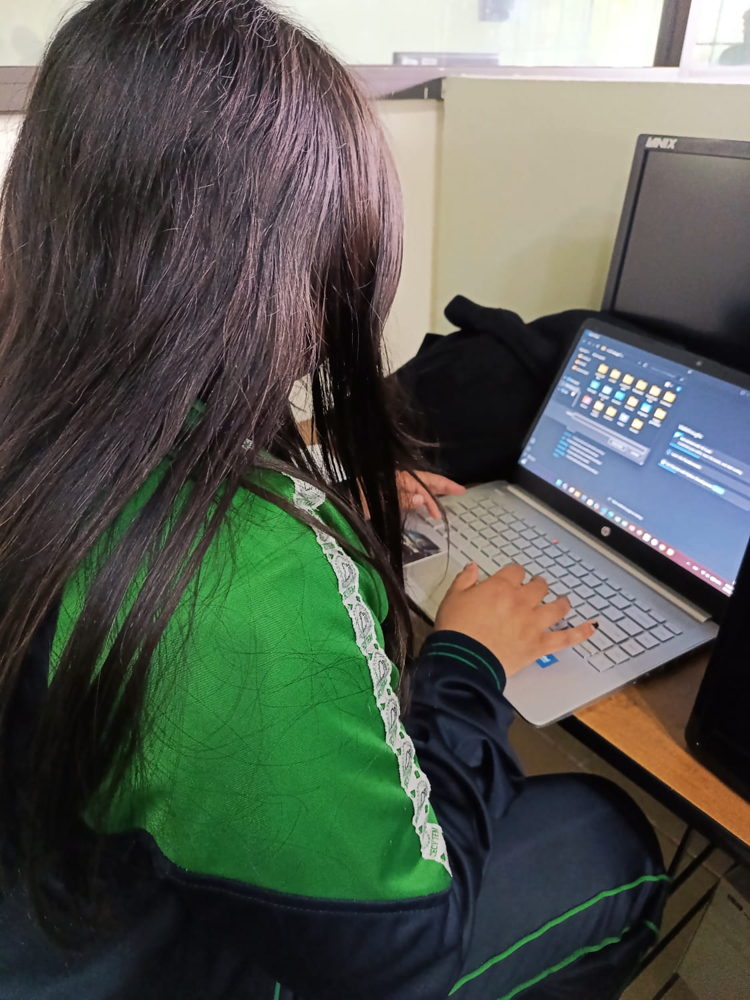
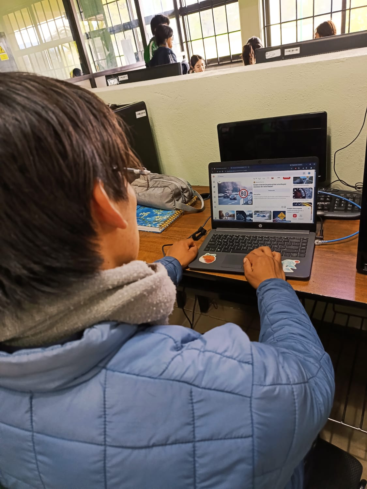
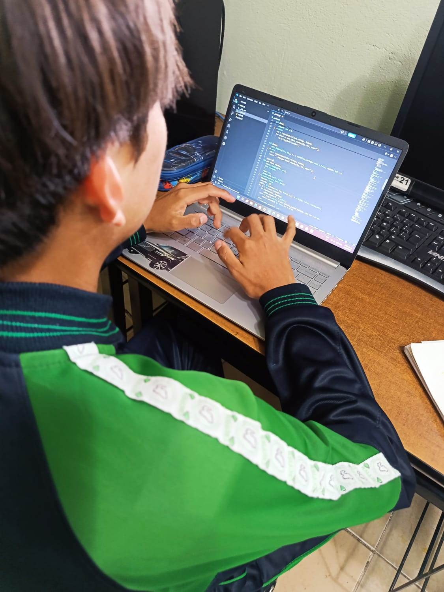
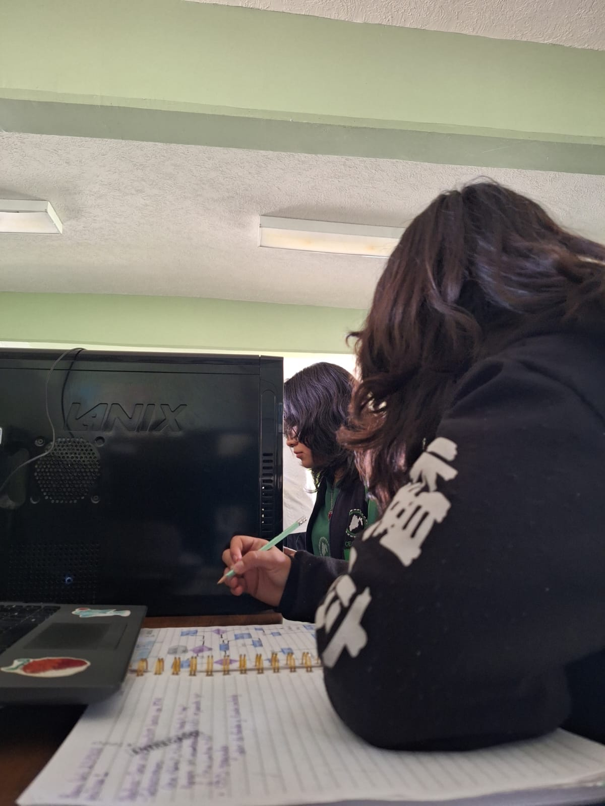

Planeación del proyecto
Comenzamos organizando nuestras ideas y definiendo los temas que queríamos compartir con la comunidad estudiantil.
Conoce cómo se fue creando el proyecto EDUSEX.
En esta galería compartimos algunos momentos del desarrollo de EDUSEX: la organización de ideas, la elaboración de materiales, el diseño de la página y el trabajo colaborativo que hicimos para crear un espacio informativo sobre educación sexual.

Comenzamos organizando nuestras ideas y definiendo los temas que queríamos compartir con la comunidad estudiantil.

Trabajamos en la preparación de información y recursos para explicar los temas de manera clara y sencilla.

Fuimos construyendo las secciones del sitio y organizando el contenido para que fuera fácil de consultar.

Compartimos ideas, revisamos avances y colaboramos para mejorar cada parte de nuestro proyecto EDUSEX.
Durante este proceso fortalecimos nuestras habilidades de investigación, creatividad, organización y trabajo en equipo. Cada avance nos ayudó a construir un recurso educativo que promueve la información responsable y el cuidado de la salud.